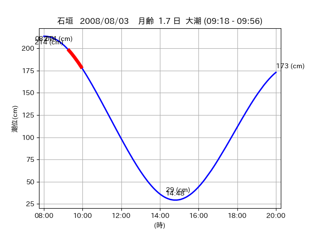
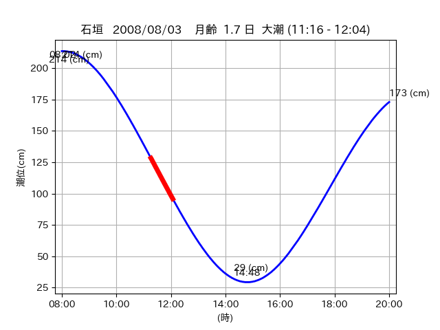
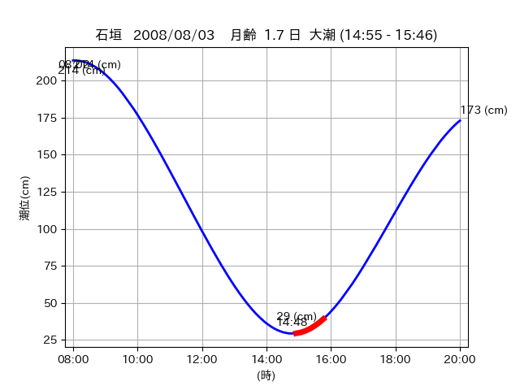

<!DOCTYPE html>
<html>
<head>
    
    <meta http-equiv="content-type" content="text/html; charset=UTF-8" />
    
        <script>
            L_NO_TOUCH = false;
            L_DISABLE_3D = false;
        </script>
    
    <style>html, body {width: 100%;height: 100%;margin: 0;padding: 0;}</style>
    <style>#map {position:absolute;top:0;bottom:0;right:0;left:0;}</style>
    <script src="https://cdn.jsdelivr.net/npm/leaflet@1.9.3/dist/leaflet.js"></script>
    <script src="https://code.jquery.com/jquery-3.7.1.min.js"></script>
    <script src="https://cdn.jsdelivr.net/npm/bootstrap@5.2.2/dist/js/bootstrap.bundle.min.js"></script>
    <script src="https://cdnjs.cloudflare.com/ajax/libs/Leaflet.awesome-markers/2.0.2/leaflet.awesome-markers.js"></script>
    <link rel="stylesheet" href="https://cdn.jsdelivr.net/npm/leaflet@1.9.3/dist/leaflet.css"/>
    <link rel="stylesheet" href="https://cdn.jsdelivr.net/npm/bootstrap@5.2.2/dist/css/bootstrap.min.css"/>
    <link rel="stylesheet" href="https://netdna.bootstrapcdn.com/bootstrap/3.0.0/css/bootstrap-glyphicons.css"/>
    <link rel="stylesheet" href="https://cdn.jsdelivr.net/npm/@fortawesome/fontawesome-free@6.2.0/css/all.min.css"/>
    <link rel="stylesheet" href="https://cdnjs.cloudflare.com/ajax/libs/Leaflet.awesome-markers/2.0.2/leaflet.awesome-markers.css"/>
    <link rel="stylesheet" href="https://cdn.jsdelivr.net/gh/python-visualization/folium/folium/templates/leaflet.awesome.rotate.min.css"/>
    
            <meta name="viewport" content="width=device-width,
                initial-scale=1.0, maximum-scale=1.0, user-scalable=no" />
            <style>
                #map_cb36e61dbef282d5660999bcd6b6c727 {
                    position: relative;
                    width: 2048.0px;
                    height: 1600.0px;
                    left: 0.0%;
                    top: 0.0%;
                }
                .leaflet-container { font-size: 1rem; }
            </style>
        
</head>
<body>
    
    
            <div class="folium-map" id="map_cb36e61dbef282d5660999bcd6b6c727" ></div>
        
</body>
<script>
    
    
            var map_cb36e61dbef282d5660999bcd6b6c727 = L.map(
                "map_cb36e61dbef282d5660999bcd6b6c727",
                {
                    center: [24.047, 123.756],
                    crs: L.CRS.EPSG3857,
                    ...{
  "zoom": 12,
  "zoomControl": true,
  "preferCanvas": false,
}

                }
            );

            

        
    
            var tile_layer_14997d5af38d2ed93b234995b2ac6813 = L.tileLayer(
                "https://cyberjapandata.gsi.go.jp/xyz/seamlessphoto/{z}/{x}/{y}.jpg",
                {
  "minZoom": 0,
  "maxZoom": 18,
  "maxNativeZoom": 18,
  "noWrap": false,
  "attribution": "\u5730\u7406\u9662\u5730\u56f3",
  "subdomains": "abc",
  "detectRetina": false,
  "tms": false,
  "opacity": 1,
}

            );
        
    
            tile_layer_14997d5af38d2ed93b234995b2ac6813.addTo(map_cb36e61dbef282d5660999bcd6b6c727);
        
    
            var marker_57b85e846f61521421d8a9e6f504adda = L.marker(
                [24.0758, 123.7214],
                {
}
            ).addTo(map_cb36e61dbef282d5660999bcd6b6c727);
        
    
            var icon_f2e8080ff5d9975ff5da9017b1ab8dde = L.AwesomeMarkers.icon(
                {
  "markerColor": "orange",
  "iconColor": "white",
  "icon": "info-sign",
  "prefix": "glyphicon",
  "extraClasses": "fa-rotate-0",
}
            );
        
    
        var popup_119d61f667bf05434a9ffed17f147808 = L.popup({
  "maxWidth": "100%",
});

        
            
                var html_5d5c119a28f9a0606045e14006b2550f = $(`<div id="html_5d5c119a28f9a0606045e14006b2550f" style="width: 100.0%; height: 100.0%;"><table><tr><td></td></tr><tr><td><center>20080803 No.1 </center></table></td></tr></table</div>`)[0];
                popup_119d61f667bf05434a9ffed17f147808.setContent(html_5d5c119a28f9a0606045e14006b2550f);
            
        

        marker_57b85e846f61521421d8a9e6f504adda.bindPopup(popup_119d61f667bf05434a9ffed17f147808)
        ;

        
    
    
                marker_57b85e846f61521421d8a9e6f504adda.setIcon(icon_f2e8080ff5d9975ff5da9017b1ab8dde);
            
    
            var poly_line_ce8d0cf95f6f66febcab57f579998316 = L.polyline(
                [[24.0758, 123.7214], [24.0703, 123.7164]],
                {"bubblingMouseEvents": true, "color": "#00FFFF", "dashArray": null, "dashOffset": null, "fill": false, "fillColor": "#00FFFF", "fillOpacity": 0.2, "fillRule": "evenodd", "lineCap": "round", "lineJoin": "round", "noClip": false, "opacity": 1.0, "smoothFactor": 1.0, "stroke": true, "weight": 3}
            ).addTo(map_cb36e61dbef282d5660999bcd6b6c727);
        
    
            var marker_730c15811544371f195ebd8d44961b9e = L.marker(
                [24.0672, 123.747],
                {
}
            ).addTo(map_cb36e61dbef282d5660999bcd6b6c727);
        
    
            var icon_c4be460b9d236b4e6d0ed080ccf5bc2e = L.AwesomeMarkers.icon(
                {
  "markerColor": "orange",
  "iconColor": "white",
  "icon": "info-sign",
  "prefix": "glyphicon",
  "extraClasses": "fa-rotate-0",
}
            );
        
    
        var popup_9ac7fe6aeb3a5f0eec5b5b49c5f84b0f = L.popup({
  "maxWidth": "100%",
});

        
            
                var html_f04d8dc8374fc73ccc7b943264d49aed = $(`<div id="html_f04d8dc8374fc73ccc7b943264d49aed" style="width: 100.0%; height: 100.0%;"><table><tr><td></td></tr><tr><td><center>20080803 No.2 </center></table></td></tr></table</div>`)[0];
                popup_9ac7fe6aeb3a5f0eec5b5b49c5f84b0f.setContent(html_f04d8dc8374fc73ccc7b943264d49aed);
            
        

        marker_730c15811544371f195ebd8d44961b9e.bindPopup(popup_9ac7fe6aeb3a5f0eec5b5b49c5f84b0f)
        ;

        
    
    
                marker_730c15811544371f195ebd8d44961b9e.setIcon(icon_c4be460b9d236b4e6d0ed080ccf5bc2e);
            
    
            var poly_line_1814a8640d6b0452037f0af66a38b734 = L.polyline(
                [[24.0672, 123.747], [24.063, 123.7452]],
                {"bubblingMouseEvents": true, "color": "#00FFFF", "dashArray": null, "dashOffset": null, "fill": false, "fillColor": "#00FFFF", "fillOpacity": 0.2, "fillRule": "evenodd", "lineCap": "round", "lineJoin": "round", "noClip": false, "opacity": 1.0, "smoothFactor": 1.0, "stroke": true, "weight": 3}
            ).addTo(map_cb36e61dbef282d5660999bcd6b6c727);
        
    
            var marker_76f9af3d3f9c714dcd3cb905ce1ff411 = L.marker(
                [24.0439, 123.7806],
                {
}
            ).addTo(map_cb36e61dbef282d5660999bcd6b6c727);
        
    
            var icon_294ffbf6b1d148659aa8a9181e204311 = L.AwesomeMarkers.icon(
                {
  "markerColor": "orange",
  "iconColor": "white",
  "icon": "info-sign",
  "prefix": "glyphicon",
  "extraClasses": "fa-rotate-0",
}
            );
        
    
        var popup_e29541583b6fc0a147a513f615512d99 = L.popup({
  "maxWidth": "100%",
});

        
            
                var html_7078f25809ff688439e3919de709828b = $(`<div id="html_7078f25809ff688439e3919de709828b" style="width: 100.0%; height: 100.0%;"><table><tr><td></td></tr><tr><td><center>20080803 No.3 </center></table></td></tr></table</div>`)[0];
                popup_e29541583b6fc0a147a513f615512d99.setContent(html_7078f25809ff688439e3919de709828b);
            
        

        marker_76f9af3d3f9c714dcd3cb905ce1ff411.bindPopup(popup_e29541583b6fc0a147a513f615512d99)
        ;

        
    
    
                marker_76f9af3d3f9c714dcd3cb905ce1ff411.setIcon(icon_294ffbf6b1d148659aa8a9181e204311);
            
    
            var poly_line_581827663afd8ceb840c5c0da9bdf8e6 = L.polyline(
                [[24.0439, 123.7806], [24.0444, 123.773]],
                {"bubblingMouseEvents": true, "color": "#FF00FF", "dashArray": null, "dashOffset": null, "fill": false, "fillColor": "#FF00FF", "fillOpacity": 0.2, "fillRule": "evenodd", "lineCap": "round", "lineJoin": "round", "noClip": false, "opacity": 1.0, "smoothFactor": 1.0, "stroke": true, "weight": 3}
            ).addTo(map_cb36e61dbef282d5660999bcd6b6c727);
        
    
            var marker_d23da5a66bee219c7bfe6b2f0d5407bf = L.marker(
                [24.0458, 123.7605],
                {
}
            ).addTo(map_cb36e61dbef282d5660999bcd6b6c727);
        
    
            var icon_b192d3f8b0b56f580740dbbc8743c965 = L.AwesomeMarkers.icon(
                {
  "markerColor": "orange",
  "iconColor": "white",
  "icon": "info-sign",
  "prefix": "glyphicon",
  "extraClasses": "fa-rotate-0",
}
            );
        
    
        var popup_f420772ad57dd7ab603221d475a0c01f = L.popup({
  "maxWidth": "100%",
});

        
            
                var html_aff4e457ea1d12e51c4a46c9f7c2797b = $(`<div id="html_aff4e457ea1d12e51c4a46c9f7c2797b" style="width: 100.0%; height: 100.0%;"><table><tr><td></td></tr><tr><td><center>20080803 No.4 </center></table></td></tr></table</div>`)[0];
                popup_f420772ad57dd7ab603221d475a0c01f.setContent(html_aff4e457ea1d12e51c4a46c9f7c2797b);
            
        

        marker_d23da5a66bee219c7bfe6b2f0d5407bf.bindPopup(popup_f420772ad57dd7ab603221d475a0c01f)
        ;

        
    
    
                marker_d23da5a66bee219c7bfe6b2f0d5407bf.setIcon(icon_b192d3f8b0b56f580740dbbc8743c965);
            
    
            var poly_line_e9ce176cce1959ca2fd2f6b67f9a399f = L.polyline(
                [[24.0458, 123.7605], [24.0472, 123.7525]],
                {"bubblingMouseEvents": true, "color": "#FF00FF", "dashArray": null, "dashOffset": null, "fill": false, "fillColor": "#FF00FF", "fillOpacity": 0.2, "fillRule": "evenodd", "lineCap": "round", "lineJoin": "round", "noClip": false, "opacity": 1.0, "smoothFactor": 1.0, "stroke": true, "weight": 3}
            ).addTo(map_cb36e61dbef282d5660999bcd6b6c727);
        
</script>
</html>